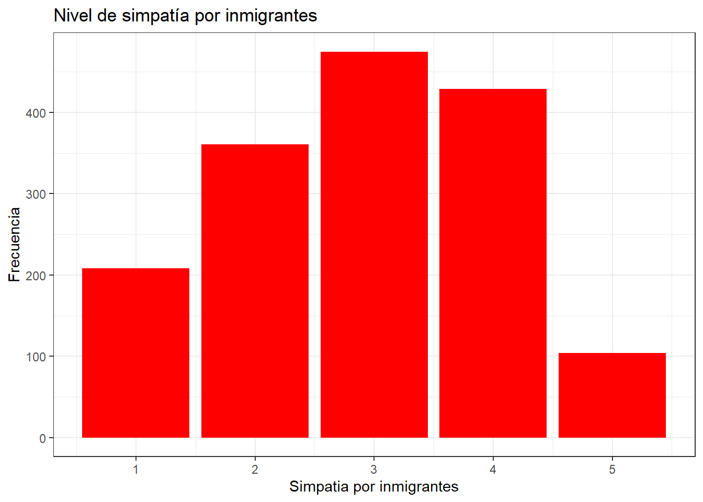
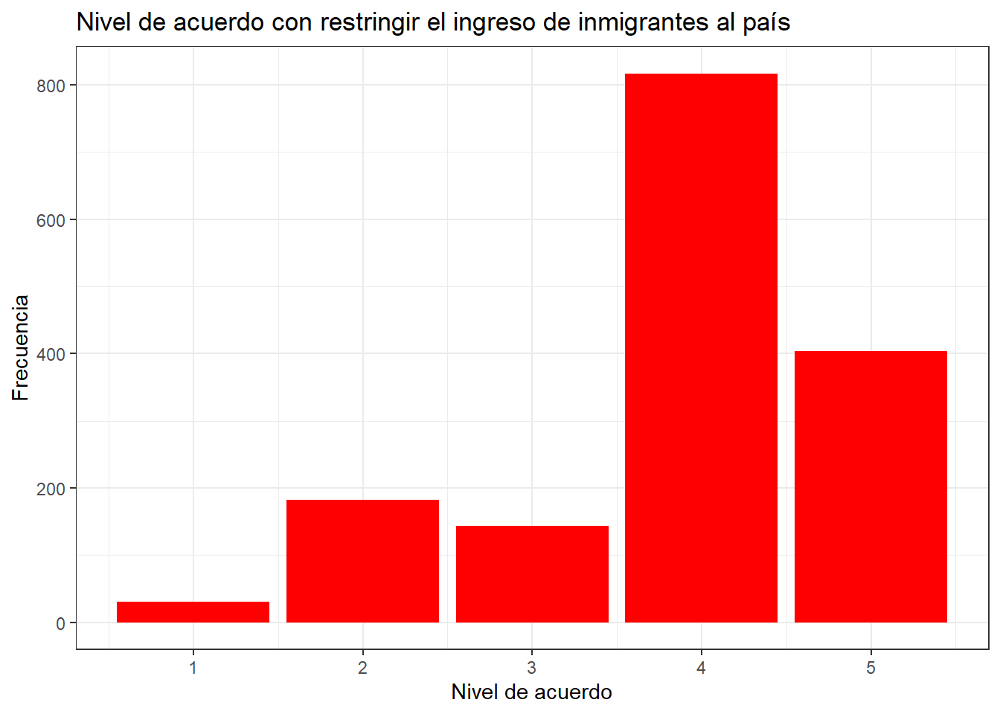
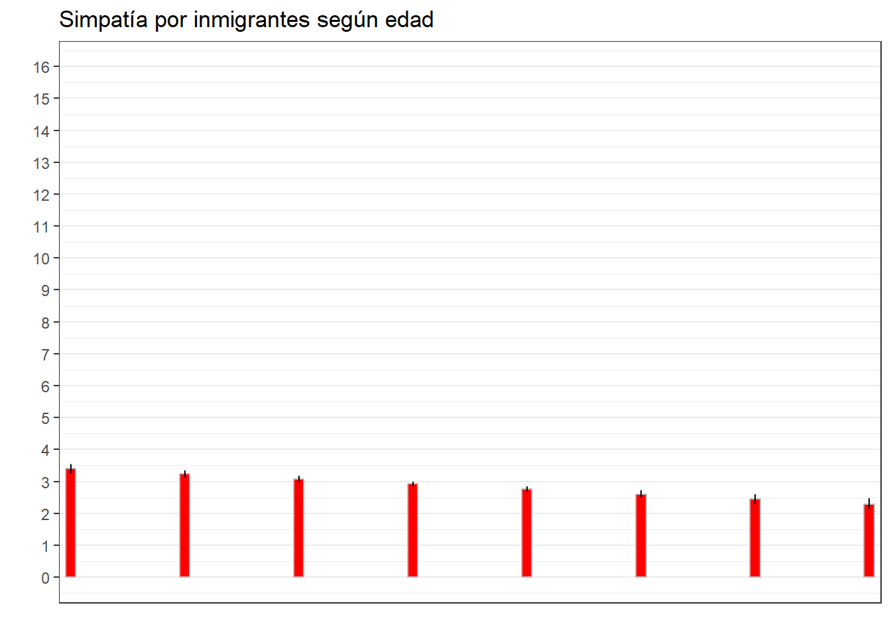

pacman::p_load(dplyr, sjmisc, car, sjlabelled, stargazer, haven, kableExtra, summarytools, ggplot2, GGally, corrplot, texreg, ggpubr)
load("ipo/input/data-proc/variables_operacionalizadas.RData")Cómo afecta la edad en la percepción de la inmigración en Chile el año 2021
Por: Jacob Reyes A.
Introducción
En Chile el fenómeno de inmigración no es algo nuevo, ocurre desde hace más de un siglo, sin embargo nunca con un flujo tan intenso como el de los últimos años. Las estadísticas del Instituto Nacional de Estadísticas (INE) en conjunto con el Servicio Nacional de Migraciones (SERMIG) estimaron que para el año 2022 había un total de 1,625,074 personas extranjeras residiendo en Chile (INE 2022). Según estas estadísticas migratorias los colectivos principales de la población extranjera son de Venezuela (32.8%), Perú (15.4%) y Colombia (11.7%) seguidos por Haití (11.4%), Bolivia (9.1%) y Argentina (4.9%).
El 2019 la Alianza Comunicación y Pobreza realizó el seminario Migración y Opinión Pública. En él el académico Roberto Méndez presentó datos relacionados a la opinión pública sobre la migración los cuales demuestran que Chile es el país con la percepción más severa sobre los migrantes, en síntesis los chilenos consideran esta ola de inmigración como una amenaza a la identidad nacional, al empleo, seguridad y al acceso de los servicios entregados por el Estado (ver Fundación Superación de la Pobreza 2019; también Escuela de Gobierno 2019)
Según un estudio del año 2017 acerca de la xenofobia realizado en las regiones del Biobío y Metropolitana, existe evidencia de que a mayor edad mayor será la percepción negativa que se tenga sobre los inmigrante lo que resulta en actitudes xenofóbicas por parte de los nacionales hacia los colectivos extranjeros que viven en el país (Tejeda 2017). En base a estos hallazgos se pretende en el presente estudio analizar la asociación entre variables similares a las del estudio de Tejeda para ver como se comportan en el año 2022.
Considerando lo anteriormente expuesto es que en esta breve investigación se busca dilucidar como la percepción de los chilenos sobre la inmigración varía según la edad de los ciudadanos, con la hipótesis: A mayor edad, la percepción negativa de los chilenos sobre los inmigrantes aumenta. Para llevar a cabo este estudio se consultarán los datos de El Estudio Longitudinal Social de Chile (ELSOC) aplicado en el 2021.
Análisis descriptivo
A continuación se presentará un breve análisis descriptivo. Cómo ya fue mencionado en la introducción los datos utilizados fueron los generados por la encuesta ELSOC el año 2022 en Chile. Se escogieron nueve variables para llevar a cabo el análisis: Edad y diferentes variables que miden las actitudes que tienen los chilenos sobre la inmigración, destacando entre ellas las que al parecer del investigador son las que miden más directamente estas actitudes: Simpatía por los inmigrantes y el nivel de acuerdo de restringir el ingreso de extranjeros al país.
Ahora se cargará los paquetes a utilizar durante todo el análisis y la base de datos con las variables ya operacionalizadas.
En la siguiente tabla descriptiva se pueden apreciar las medidas de tendencia central de las variables escogidas para analizar. En cuanto a la variable Edad se puede observar que la edad mínima de los encuestados es de 20, la máxima 85 y el promedio de edad de la muestra es de 51 años. En cuanto a las variables de actitud hacia los inmigrantes la mayoría presenta un valor cercano a 3, este valor en todas las variables representa un valor de indiferencia, es decir que presentan una actitud que no es ni negativa ni de positiva sobre los inmigrantes. A excepción de la variable del nivel de acuerdo con que exista un ingreso igualitario a la salud por parte de nacionales y extranjeros, presenta una media de 3.9 lo que quiere decir que en cuanto a un ingreso igualitario a los servicios de salud del país los chilenos tienen una actitud positiva. Otra variable que presenta una media diferente es la del nivel de acuerdo sobre restringir el ingreso de los inmigrantes al país, también se puede observar un 3.9 de media, lo cual evidencia una actitud muy negativa por parte de la ciudadanía a la inmigración ya que están de acuerdo con esta afirmación. Sin embargo, es necesario mencionar que de todo el grupo de variables esta es la que mayor número de casos perdidos presentaba
summarytools::dfSummary(proc_data, plain.ascii = FALSE)### Data Frame Summary
#### proc_data
**Dimensions:** 1577 x 9
**Duplicates:** 15
-----------------------------------------------------------------------------------------------------------------------------------------------------------------------------
No Variable Label Stats / Values Freqs (% of Valid) Graph Valid Missing
---- ---------------------------------- ----------------------------------------- -------------------------- -------------------- ---------------------- ---------- ---------
1 Edad\ Edad Mean (sd) : 50.6 (14.6)\ 64 distinct values \ \ \ \ : \ \ : : .\ 1577\ 0\
[numeric] min < med < max:\ \ \ \ \ : : : : : .\ (100.0%) (0.0%)
21 < 51 < 85\ \ \ : : : : : : :\
IQR (CV) : 23 (0.3) : : : : : : : : :\
: : : : : : : : : .
2 simpatia_extranjeros\ Nivel de simpatía por inmigrantes Mean (sd) : 2.9 (1.1)\ 1 : 208 (13.2%)\ II \ 1577\ 0\
[numeric] min < med < max:\ 2 : 361 (22.9%)\ IIII \ (100.0%) (0.0%)
1 < 3 < 5\ 3 : 475 (30.1%)\ IIIIII \
IQR (CV) : 2 (0.4) 4 : 429 (27.2%)\ IIIII \
5 : 104 ( 6.6%) I
3 ansiedad_interaccion_inmg\ Nivel de ansiedad por interactuar con Mean (sd) : 3.2 (1)\ 1 : 69 ( 4.4%)\ \ 1577\ 0\
[numeric] inmigrantes min < med < max:\ 2 : 325 (20.6%)\ IIII \ (100.0%) (0.0%)
1 < 3 < 5\ 3 : 513 (32.5%)\ IIIIII \
IQR (CV) : 1 (0.3) 4 : 591 (37.5%)\ IIIIIII \
5 : 79 ( 5.0%) I
4 acuerdo_perdida_de_identidad\ Nivel de acuerdo con que la inmigración Mean (sd) : 2.9 (1.1)\ 1 : 113 ( 7.2%)\ I \ 1577\ 0\
[numeric] afecta la identidad nacional min < med < max:\ 2 : 626 (39.7%)\ IIIIIII \ (100.0%) (0.0%)
1 < 3 < 5\ 3 : 229 (14.5%)\ II \
IQR (CV) : 2 (0.4) 4 : 476 (30.2%)\ IIIIII \
5 : 133 ( 8.4%) I
5 acuerdo_aumento_desempleo\ Nivel de acuerdo con que la inmigración Mean (sd) : 3.2 (1.1)\ 1 : 76 ( 4.8%)\ \ 1577\ 0\
[numeric] genera desempleo min < med < max:\ 2 : 491 (31.1%)\ IIIIII \ (100.0%) (0.0%)
1 < 4 < 5\ 3 : 176 (11.2%)\ II \
IQR (CV) : 2 (0.4) 4 : 662 (42.0%)\ IIIIIIII \
5 : 172 (10.9%) II
6 confianza_en_extranjeros\ Nivel de confianza en inmigrantes Mean (sd) : 2.5 (1)\ 1 : 296 (18.8%)\ III \ 1577\ 0\
[numeric] min < med < max:\ 2 : 442 (28.0%)\ IIIII \ (100.0%) (0.0%)
1 < 3 < 5\ 3 : 563 (35.7%)\ IIIIIII \
IQR (CV) : 1 (0.4) 4 : 247 (15.7%)\ III \
5 : 29 ( 1.8%)
7 fomentar_migracion_calificada\ Nivel de acuerdo con fomentar la Mean (sd) : 3.3 (1.1)\ 1 : 69 ( 4.4%)\ \ 1577\ 0\
[numeric] inmigración calificada min < med < max:\ 2 : 372 (23.6%)\ IIII \ (100.0%) (0.0%)
1 < 4 < 5\ 3 : 288 (18.3%)\ III \
IQR (CV) : 2 (0.3) 4 : 717 (45.5%)\ IIIIIIIII \
5 : 131 ( 8.3%) I
8 acceso_igualitario_salud\ Nivel de acuerdo con que exista un Mean (sd) : 3.9 (0.8)\ 1 : 17 ( 1.1%)\ \ 1577\ 0\
[numeric] ingreso igualitario a la salud min < med < max:\ 2 : 132 ( 8.4%)\ I \ (100.0%) (0.0%)
1 < 4 < 5\ 3 : 94 ( 6.0%)\ I \
IQR (CV) : 0 (0.2) 4 : 1124 (71.3%)\ IIIIIIIIIIIIII \
5 : 210 (13.3%) II
9 acuerdo_restriccion_inmigrantes\ Nivel de acuerdo con restringir el Mean (sd) : 3.9 (1)\ 1 : 31 ( 2.0%)\ \ 1577\ 0\
[numeric] acceso a inmigrantes min < med < max:\ 2 : 182 (11.5%)\ II \ (100.0%) (0.0%)
1 < 4 < 5\ 3 : 143 ( 9.1%)\ I \
IQR (CV) : 1 (0.3) 4 : 817 (51.8%)\ IIIIIIIIII \
5 : 404 (25.6%) IIIII
-----------------------------------------------------------------------------------------------------------------------------------------------------------------------------siguiendo con el análisis descriptivo a continuación se presentarán dos gráficos univariados de dos variables principales de la investigación.
En la Figure 1 se puede observar la variable “Nivel de simpatía por inmigrantes”. En este gráfico se puede apreciar que la barra más alta es la de al medio, es decir la del valor de categoría de respuesta 3 (esta categoría de respuesta es: algo) es decir que los chilenos en su mayoría solo sienten algo de simpatía por los inmigrantes del país. Por último, parece interesante que a pesar de que la siguiente barra más alta sea la de valor 4, se pueden apreciar más observaciones negativas en esta variable (barras del lado izquierdo del gráfico).
proc_data %>% ggplot(aes(x = simpatia_extranjeros)) +
geom_bar(fill = "red")+
labs(title = "Nivel de simpatía por inmigrantes",
x = "Simpatia por inmigrantes",
y = "Frecuencia") +
theme_bw()
A continuación se presenta la Figure 2, esta corresponde a la variable “Nivel de acuerdo con restringir el ingreso de inmigrantes al país”. En este gráfico, considerando las categorías de respuesta de esta variable (1 Totalmente en desacuerdo a 5 Totalmente de acuerdo) se puede observar que solo dos categorías dominan en frecuencia, estas son la número 4 (De acuerdo). Seguido por la categoría “Totalmente de acuerdo”. En síntesis, con este gráfico se puede apreciar que existe mayor acuerdo (por mucho) a que se restringa el ingreso de inmigrantes al país. Nuevamente se hace necesario mencionar que esta variable es la que más casos perdidos presentaba en todo el grupo seleccionado.
proc_data %>% ggplot(aes(x=acuerdo_restriccion_inmigrantes)) +
geom_bar(fill = "red") +
labs(title = "Nivel de acuerdo con restringir el ingreso de inmigrantes al país",
x = "Nivel de acuerdo", #Creo que el título del gráfico es suficientemente claro para dejar esta etiqueta así de simple
y = "Frecuencia") +
theme_bw()
Análisis de asociación.
A continuación, se presentará una tabla de correlación para observar el nivel de asociación que hay entre estas variables, considerando a la edad como la variable independiente y el resto como variables a explicar.
En la Figure 3 se puede observar la correlación que tienen todas las variables entre sí. Como la variable “edad” es nuestra variable independiente la presente interpretación se enfocará en la asociación existente entre esta variable y el resto.
En general entre la variable Edad y el resto de variables referidas a la actitud de los chilenos con la inmigración se puede observar una asociación pequeña entre estas variables, ya que lo valores del coeficiente de correlación de Pearson va desde -0.2 a 1,7. Existiendo una correlación negativa con las variables: Nivel de simpatía por inmigrantes (-0.2); Nivel de ansiedad por interactuar con inmigrantes (-0.11); Nivel de confianza en inmigrantes (-0,15); Nivel de acuerdo con que exista un ingreso igualitario a la salud (-0.11) a pesar de ser asociaciones pequeñas, dan un buen indicio para la hipótesis propuesta ya que al ser una correlación negativa quiere decir que a medida que aumente la edad los valores en estas variables irían en el sentido contrario, es decir hacia una actitud más negativa de la inmigración. Y una correlación positiva con las variables: Nivel de acuerdo con que la inmigración afecta a la identidad nacional (0.16); Nivel de acuerdo con que la inmigración genera de desempleo (0.16) y Nivel de acuerdo con restringir el acceso a inmigrantes (0.12). Nuevamente, aunque sea una asociación pequeña demuestran que a medida que aumenta la edad estas tres variables que miden actitudes negativa también aumentan. Por último, es importante señalar que todas estas asociaciones presentan un valor p < 0.001, es decir que estos datos se pueden extrapolar a la población con un 99.9% de confianza.
sjPlot::tab_corr(proc_data,
triangle = "lower")| Edad | Nivel de simpatía por inmigrantes |
Nivel de ansiedad por interactuar con inmigrantes |
Nivel de acuerdo con que la inmigración afecta la identidad nacional |
Nivel de acuerdo con que la inmigración genera desempleo |
Nivel de confianza en inmigrantes |
Nivel de acuerdo con fomentar la inmigración calificada |
Nivel de acuerdo con que exista un ingreso igualitario a la salud |
Nivel de acuerdo con restringir el acceso a inmigrantes |
|
|---|---|---|---|---|---|---|---|---|---|
| Edad | |||||||||
| Nivel de simpatía por inmigrantes | -0.204*** | ||||||||
|
Nivel de ansiedad por interactuar con inmigrantes |
-0.112*** | 0.428*** | |||||||
|
Nivel de acuerdo con que la inmigración afecta la identidad nacional |
0.165*** | -0.360*** | -0.290*** | ||||||
|
Nivel de acuerdo con que la inmigración genera desempleo |
0.169*** | -0.355*** | -0.298*** | 0.595*** | |||||
| Nivel de confianza en inmigrantes | -0.156*** | 0.592*** | 0.478*** | -0.380*** | -0.370*** | ||||
|
Nivel de acuerdo con fomentar la inmigración calificada |
-0.018 | 0.154*** | 0.136*** | -0.028 | -0.071** | 0.182*** | |||
|
Nivel de acuerdo con que exista un ingreso igualitario a la salud |
-0.110*** | 0.309*** | 0.223*** | -0.236*** | -0.239*** | 0.306*** | 0.201*** | ||
|
Nivel de acuerdo con restringir el acceso a inmigrantes |
0.124*** | -0.272*** | -0.156*** | 0.324*** | 0.372*** | -0.246*** | 0.008 | -0.191*** | |
| Computed correlation used pearson-method with listwise-deletion. | |||||||||
Regresión lineal simple.
Para finalizar se realizará un análisis de regresión simple entre la variable edad y tres variables de actitud hacia los inmigrantes (dos de las con mayor asociación (“Nivel de simpatía con inmigrantes” y “Nivel de acuerdo con que la inmigración genera desempleo” y la última por su relevancia en cuanto a lo directa que es para medir la actitud de los chilenos hacia la inmigración (“Nivel de acuerdo con restringir el ingreso de inmigrantes al país”).
En cuanto al modelo 1 (simpatía con extranjeros)
reg2 <- lm(simpatia_extranjeros ~ Edad, data = proc_data)
reg3 <- lm(acuerdo_restriccion_inmigrantes ~ Edad, data = proc_data)
reg4 <- lm(acuerdo_aumento_desempleo ~ Edad, data = proc_data)
stargazer(reg2, type = "text")
===============================================
Dependent variable:
---------------------------
simpatia_extranjeros
-----------------------------------------------
Edad -0.016***
(0.002)
Constant 3.713***
(0.101)
-----------------------------------------------
Observations 1,577
R2 0.042
Adjusted R2 0.041
Residual Std. Error 1.110 (df = 1575)
F Statistic 68.505*** (df = 1; 1575)
===============================================
Note: *p<0.1; **p<0.05; ***p<0.01stargazer(reg3, type = "text")
===================================================
Dependent variable:
-------------------------------
acuerdo_restriccion_inmigrantes
---------------------------------------------------
Edad 0.008***
(0.002)
Constant 3.454***
(0.089)
---------------------------------------------------
Observations 1,577
R2 0.015
Adjusted R2 0.015
Residual Std. Error 0.978 (df = 1575)
F Statistic 24.432*** (df = 1; 1575)
===================================================
Note: *p<0.1; **p<0.05; ***p<0.01stargazer(reg4, type = "text")
===============================================
Dependent variable:
---------------------------
acuerdo_aumento_desempleo
-----------------------------------------------
Edad 0.013***
(0.002)
Constant 2.560***
(0.102)
-----------------------------------------------
Observations 1,577
R2 0.029
Adjusted R2 0.028
Residual Std. Error 1.128 (df = 1575)
F Statistic 46.389*** (df = 1; 1575)
===============================================
Note: *p<0.1; **p<0.05; ***p<0.01ggeffects::ggpredict(reg2, terms = c("Edad")) %>%
ggplot(aes(x=x, y=predicted)) +
geom_bar(stat="identity", color="grey", fill="red")+
geom_errorbar(aes(ymin = conf.low, ymax = conf.high), width=.1) +
labs(title="Simpatía por inmigrantes según edad", x = "", y = "") +
theme_bw() +
scale_x_discrete(name = "",
labels = c("Muy Poco/Nada", "Poco", "Algo", "Bastante", "Mucho")) +
scale_y_continuous(limits = c(0,16),
breaks = seq(0,16, by = 1))
References
Escuela de Gobierno. 2019. “Méndez Entregó Indicadores Que Muestran a Chile Como Un País Con Percepción Negativa Frente a La Migración.” https://gobierno.uc.cl/noticias/mendez-entrego-indicadores-que-muestran-a-chile-como-un-pais-con-percepcion-negativa-frente-a-la-migracion/.
Fundación Superación de la Pobreza. 2019. “Los Chilenos Son Los Más Duros de América En Su Percepción Sobre Los Migrantes.” https://www.superacionpobreza.cl/los-chilenos-son-los-mas-duros-de-america-en-su-percepcion-sobre-los-migrantes/.
INE. 2022. “Estimación de Personas Extranjeras: Residentes Habituales En Chile Al 31 de Diciembre de 2022.” December. https://serviciomigraciones.cl/estudios-migratorios/estimaciones-de-extranjeros/.
Tejeda. 2017. “Inmigración y Reactividad de La Sociedad Receptora. Una Descripción Cuantitativa de La Xenofobia y El Racismo En La Región Biobío y Metropolitana.”